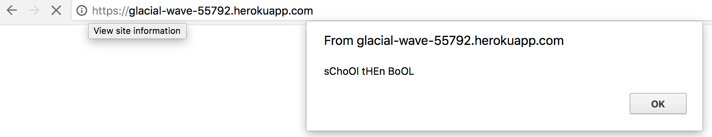
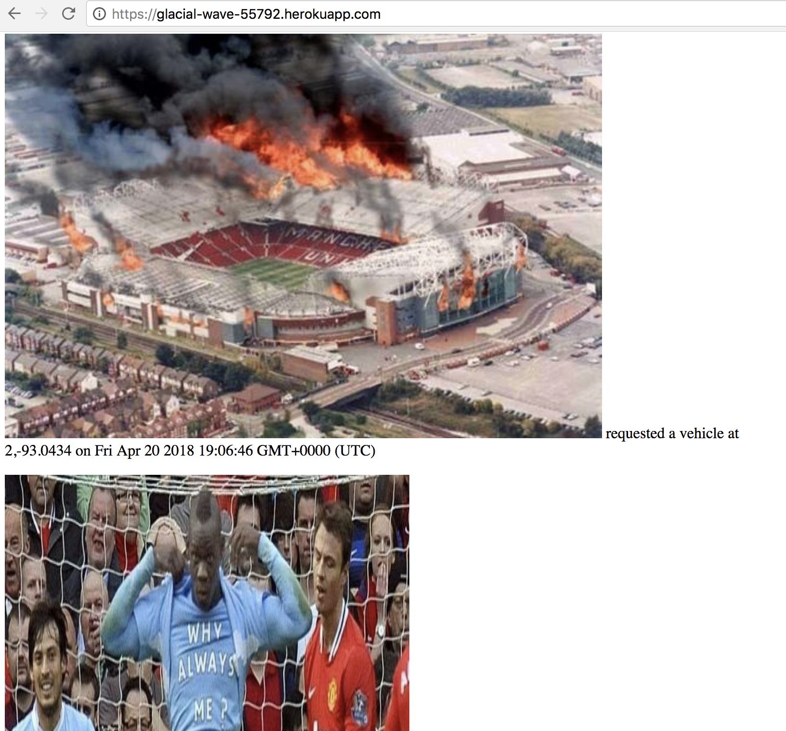
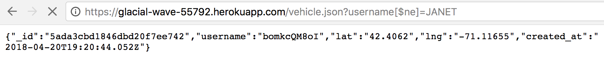

Issue 1: Cross Site Scripting
- Location: Posting on https://glacial-wave-55792.herokuapp.com/rides
- Severity of Issue: Severe
- Desription of Issue
- Vulnerability Proof:

 - Resolution
This is severe because injection of HTML and javscript code is possible. For one major possibility, anyone trying to access the website can be redirected to another website.
When submitting a POST request via curl on the terminal, one can inject Javascript source code, such as alert(), or, though a little different, HTML injection by injecting HTML images as the username parameter.
Add a line of code that screens out unncessary characters. More specifically, removing characters such as / [ ^ > < etc will fix this issue. For example:
Issue 2: Query String and MongoDB Injections
- Location: Accessing vehicle information on https://glacial-wave-55792.herokuapp.com/vehicle.json?username=...
- Severity of Issue: Severe
- Desription of Issue
- Vulnerability Proof:
 - Resolution
This issue is ranked severe because private information regarding vehicles, such as exact location, can be accessed to those without the knowledge of certain keys. If one knew of a driver JANET, inputting
would have yielded other drivers that JANET had no access to. User information is not protected and should be protected for those without knowledge about the users.
When accessing JSON data through the extension path /vehicle.json, when specifying the query with
Add a line of code that screens out
query operators. This can be done similarly to that of what was done for XSS.
Issue 3: Overloading and DoS Attack
- Location: Posting unlimited data on https://glacial-wave-55792.herokuapp.com/rides
- Severity of Issue: Medium
- Desription of Issue
- Proof of Vulnerability
- Resolution
This issue is ranked medium because the perpetrator can make our web application unavailable by temporarily crashing and disrupting service by overloading our server with overwhelming requests. This prevents legitimate requests by actual users from being fulfilled. Of course, if our users cannot use the application, we will lose valuable users. However, there is no privacy breach.
When curling and POSTing data to the Mongo database, the server keeps accepting POST data. Perpetrator can continuously and endlessly push data to our service and ultimately crash our website.

This can be fixed by implementing rate limiting, controlling the rate of traffic received by our end. This can be done so by implementing session management and using rate limiting algorithm to verify user session to limit the extent of requests. In the event of too many requests, we can send status code 429--too many requests.